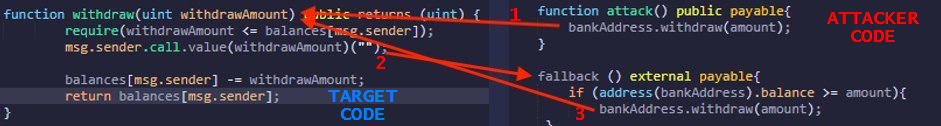

Re-Entrancy
Prerequisite
:
•
Vulnerable code pattern(Checks → Interaction → Effects) instead of the more Secure code pattern (Checks → Effects → Interactions)•
Transfer funds wit the Call.Value function, can get worse the vulnerability and conduct to a complete drain of the funds
Reentrancy attacks that ultimately allow an attacker to liquidate the contract of all of its funds without much effort. The
incorrect order of operations(CHI) allows an attacker to avoid require statements which check if a user’s balance is high enough to send a transaction. We can use this to bypass incorrect logic patterns and drain a contract of its funds.
Re-Entrancy attacks allow an attacker to create a re-cursive loop within a contract by having the contract call the target function rather than a single request from a user. Instead the request comes from the attackers contract which does not let the target contracts execution complete until the tasks intended by the attacker are complete. Usually this task will be draining the money out of the contract until all of the money for every user is in the attackers account.
Example Life ScenarioLet's say that you are using a bank and you have deposited 100 dollars into your bank account.
Now when you withdraw your money from your bank account the bank account first sends you 100 dollars before updating your account balance.
Well what if when you received your 100 dollars, it was sent to malicious code that called the withdraw function again not letting the initial target deduct your balance ?
With this scenario you could then request 100 dollars, then request 100 again and you now have 200 dollars sent to you from the bank. But 50% of that money is not yours. It's from the whole collection of money that the bank is tasked to maintain for its accounts.
Ok that's pretty cool, but what if that was in a re-cursive loop that did not BREAK until all accounts at the bank were empty?
function withdraw(uint withdrawAmount) public returns (uint) {
///Checks that you are only withdrawing the amount you have in your account or sends back an error.
require(withdrawAmount <= balances[msg.sender]);
///Sends your requested amount to the address the requested that withdrawal
require(msg.sender.call.value(withdrawAmount)()); /// <-- PROBLEM
///Deducts the amount you withdrew from your account from your total balance.
balances[msg.sender] -= withdrawAmount; /// <-- PROBLEM
///returns your current balance
return balances[msg.sender];
}
Ok this all seems logical.. however the issue is in Line 6 - Line 9.
require(msg.sender.call.value(withdrawAmount)());
balances[msg.sender] -= withdrawAmount;
. So if you were to call this from a piece of code which just accepts anything which is sent to it, but then re-calls the withdraw function you have a problem as it never gets to Line 9 which deducts the balance from your total. This means that Line 6 will always have enough money to keep withdrawing.
Attacking steps
1.
Passing the Checks:Essentially what will happen is that the attacker will use his own malicious contract to call the withdraw function after adding a small value to his account. When the withdraw function is called the attackers contract will attempt to withdraw a smaller amount then the attacker has in his account which will pass the Checks portion of the pattern on line 12.
2.
Looping the Interaction:Next the target contract will attempt to interact with the attacker’s contract by sending the valid withdrawn value from the contract. However, the attacker will have a
fallback function that receives the sent value and calls the withdraw function again.
The second time calling the target contract will result in the exact same checks and interaction without ever updating the balance via the Effects portion. Over and Over and Over again.
3.
Updating the Effects:The Effects portion will only be updated after the attacker’s loop ends and the damage is done. Which means that the attacker has withdrawn funds many times over, but only subtracted that value a single time. Potentially draining all of the funds of the contract.
What is a fallback function?A
fallback function is a default function in a contract that is called when no other function is specified. So, in this instance when the contract receives funds and no other directions from the withdraw function, then the fallback function will be executed.
The fallback function will:
1) check that the target contract still contains a balance larger then what we are requesting.
If this check passes then
2) the attacker contract calls back the withdraw function again. Which starts the whole process over and over again
3) The attack finish when the balance of the target contract is less than what we are requesting. Let’s take a look at a graphical representation of this to help understand what’s going on.
Attack Code ExampleCheck the FULL attack example in the subchapter “
Attack to a vulnerable code”
